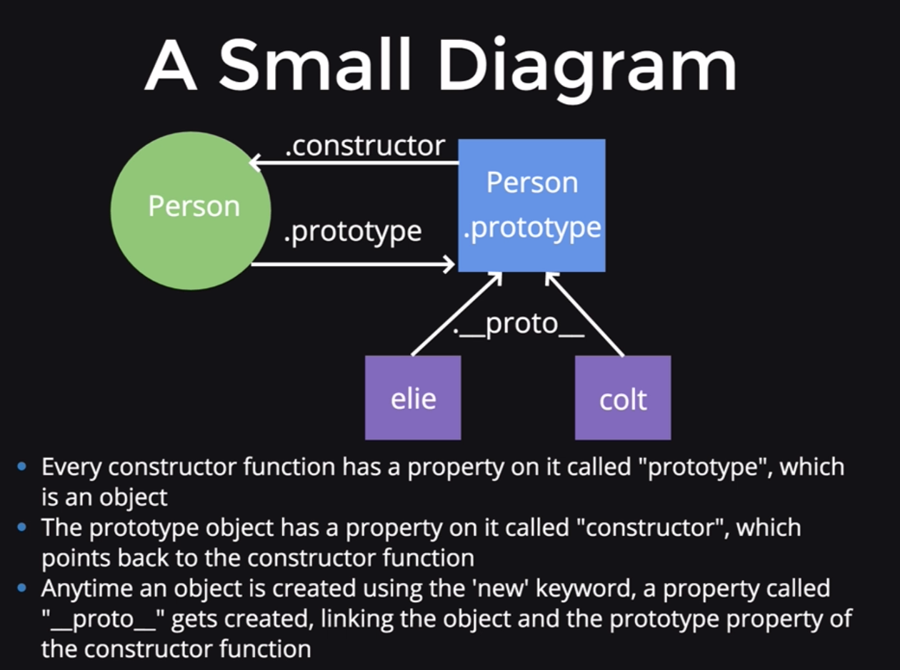

Etc
Section 39-41
- Lecture 372: Git and github
- version control
- hard to understand the utility of git when you're starting out/on your own
- what is git - the technology
- what is Github - the website
- why should you care - many developers use, popular
- novel writing analogy: imagine you're a writer - have many versions and save them, like save checkpoint
- with git, you can save different versions of multiple files
- installing git: to check if git is installed, you can do
git --version
- Lecture 373: git init, add, and commit
git init - manually tell git to track the folder and all folders/files in the folder- accidentially init a .git, use
rm -rf on the .git file
git add - tells git which files to add to the commit (select files for commit)git commit -m - what is the commit and the message going with the commit - traditionally git commits are in the present tense
- Lecture 374: git log, checkout
git log - history of all commits, escape using q - the git hash is the most important part:
commit 27c7357277160a99f2bbd6975d5f095e35194d2a (example)
- go to back to that commit, you can do
git checkout 27c7357277160a99f2bbd6975d5f095e35194d2a - it may tell you that there are untracked changes. you can commit these changes (that's where master is), then do git checkout again
- you will no longer be on master - HEAD is like a pointer in times, and it will now be at the 27c73.... commit: the head is now detached from master
- usually when we check out, it's to look at some old code and then go back to master
- but sometimes you want to go back to an old commit and revert to that commit
- one way of reverting:
git revert --no-commit 27c7357277160a99f2bbd6975d5f095e35194d2a..HEAD
- then commit your changes (don't need to add)
git commit -m "reverted back to ..."
- this method doesn't delete everything: you can still access/see old "deleted" changes with git log
- ** note
Section 40: Deploying
- Lecture 376: heroku
- running code on someone else's server
- get our application on heroku servers and get it to run on another computer on another server
- first with a simple app, then yelpcamp
- Lecture 377-9: deploying a simple app
- (very simple) deplying demo
- the
--save in npm install --save is very important here for deplying
- we need to sign up on heroku
- may need to use
heroku login -i
- after logging in, git init new repo (git init, add ., commit -m "initial commit")
- run
heroku create, will create a random name
- need to associate your code with heroku: heroku created a new git remote ("https://git.heroku.com/limitless-spire-24915.git")
- when you run
git remote -v, you can see the new branch
- to associate:
git push heroku master, lots of code in the terminal will follow
- however when we go to https://limitless-spire-24915.herokuapp.com/ now, it will show an error
- to see the error: >
heroku logs
- we don't have a "start script" - equivalent of
node app.js
- so we need to add
"start": "node app.js" to our package.json in the scripts
- after that, git add, commit, and push master to heroku
- note: need to use:
const PORT = process.env.PORT || 3000;
app.listen(PORT, () => {
console.log(`Our app is running on port ${ PORT }`);
}); for app.listen
- Lecture 380-2: deplying yelpcamp
- YelpCamp v11 for deploying
- app.js
- this is more complicated because we need to get the database on heroku
- created at
https://secure-ridge-50520.herokuapp.com/ | https://git.heroku.com/secure-ridge-50520.git
- didn't handle any db stuff, so we will get an error
- we can run terminal commands in the heroku container, example:
heroku run ls
- Important Update: mLab (mongolab) is now MongoDB Atlas, please see here for written instructions or here for a video (detailing how to set up and use MongoDB Atlas with Node (Express)).
- we need a hosted mongo db - using MongoDB Atlas
- welcome - click on build my first cluster - create, then wait for cluster to be created
- click "connect", then whitelist your ip address
- create a mongodb user
- connect to apllication with a "connection string" - copy this
- in the app.js, add
mongoose.connect("[copied string]"), changing the password to your password and retryWrites=false
- Lecture 383: environment variables
- good to separate variables between local version and deployed version
- *** need to add
0.0.0.0/0 to mongodb atlas whitelist
- had a bug: changed port to 80 (was previously 3000)
- ex. between mongodb and mongodb atlas
- environment variables - refer to the environment in which the code is run: adding variables that aren't constant
- always start with
process.env
- we'll create an environment variable (convention is to do it in all caps)
- in the command line:
export DATABASEURL=mongodb://localhost:27017/yelp_camp_v11
- then, if we go into app.js and
console.log(process.env.DATABASEURL);, it should print mongodb://localhost:27017/yelp_camp_v11
- we can locally run
mongoose.connect(process.env.DATABASEURL); with no problems
- however, this won't work on heroku: env variable is not set there
- go to heroku and add the variable in settings --> config vars (this can be done in the command line too)
- another good reason for using env var: they're hidden, and when you put your code online, no problem
- now, locally we have the local mongo db associated with yelpcamp (need to have mongod, mongo open in command line)
- on heroku, we have our mongodb atlas associated with our deployed yelpcamp
Section 41: more javascript stuff
- Lecture 384-9: Keyword This
- the keyword
this
- (1) in the global context:
this refers to the window object - the global object
- in the global context: inside a function, the keyword
this is still the window object
- what happens when we attach properties to
this in the global context - anything we attach to it has global scope, but this is bad practice
- it is good practice to declare all variables we want to use at the start of the code, and assign the values at a later time in the code
- strict mode: use with
"use strict" at the start of the code - stops developers from accidentally adding properties to global this - value becomes undefined
- (2) implicit/object: inside a function, for example:
var person = { first: "Elie", sayHi: function() { return "Hi " + this.first } }, person.sayHi() returns "Hi Elie"
- becomes complicated with nested objects, for example a dog object in the person object
- using
this in the dog object would refer to the dog - always refers to the parent object
- when the keyword this is inside a declared object, its value will always be the closest parent object
- if the dog object had no
first property, then calling sayHi() from within the dog objet would return "Hi [undefined]"
- how to fix this: the call apply bind methods
- to set the keyword
this to only refer to the person object
- (3) explicit binding:
- these three methods can only be used by functions
- (1)
call - many params: thisArg, a, b, ... , invoked immediately
- used in real life to 'borrow' functions that use
this between objects (avoid duplication)
- setting
this in sayHello to refer to person object: person.dog.sayHello.call(person); - sayHello is not envoked, so no ()
- colt object and elie objects (example):
colt.sayHi.call(elie);
- (2)
apply - 2 params: thisArg, [a, b, ... ], invoked immediately
- the same as
call until you start adding arguments
- apply - 2 args (params passed as second array to 2nd arg)
- see example
- (3)
bind - many params: thisArg, a, b, ... , invoked later - returns function definition that can be used at a later time
- returns function definition
- don't need to know params, just
thisArg
- can use to set context of this for a function that will be called later in time
- useful for asynchronous
- "partial application"
- setTimeout example: when the function is called later in time,
this refers to the global this
- see example (comments in the code)
- (4) the keyword
new:
- when the
new keyword is used, an object is created out of thin air
- see example (comments in the code)
- Lecture 394-402: OOP
- see examples (comments in the code)
- object oriented programming
- constructor functions: a blueprint
- capitalized for best practice
- we need the
new keyword
- (1) it creates an empty object, (2) sets the keyword
this to be that empty object, then (3) adds the line return this to the end of the function, and follows it
- (4) it also adds a property onto the empty object called
__proto__ ("dunder proto"), which linkes the prototype property on the constructor function to the empty object (more on this later)
- multiple constructors:
- imagine two constructor functions, one for a Car and one for a Motorcycle
- lots of code duplication
- how to change the value of the keyword this?
call or apply
- note that you can get a list of the arguments passed into a function with
argument
- prototypes:
- circle is a function, square is an object
- person constructor function - has a prototype property (an object)
- prototype has a constructor function
- the dunder proto property
__proto__ links the new (any) object and prototype property of the constructor function
- so if we change anything in the constructor (example
Person.prototype.isInstructor = true; )
- then all objects made with that constructor have access to the change
console.log(elie.isInstructor); - use this to refactor code to be more efficient
- instead of defining a function every time you make a new object, put it on the prototype
- example:
Person.prototype.sayHi = function(){
console.log("Hi " + this.name);
} - note that sayHi does not have brackets
- see examples (comments in the code)

- recap:
- Every time the new keyword is used, a link between the object and the prototype property of the constructor is established - this link can be accessed using
__proto__
- the prototype object contains a peoperty called constructor, which points back to the constructor function
- to share properties and methods for objects created by a constructor function, place them in the prototype - this is most efficient
- Lecture 403: closures
- example of closures here (comments in the code)
- a defined function that makes use of variables defined in outer functions that have previously returned